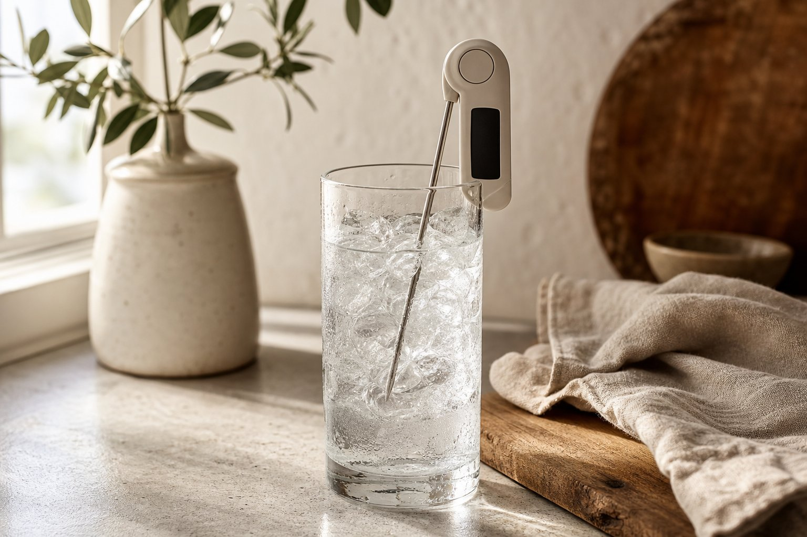

Home › Guides › The 30-second ice-water test that tells …
How-to · USDA method · about 3 min of reading · checked 2026-11-20
The 30-second ice-water test that tells you whether your thermometer is lying
A thermometer is a measuring instrument, and instruments drift. The United States Department of Agriculture publishes two ways to check one at home. The first takes thirty seconds and needs nothing you do not already own.
What we would do
Test the week it arrives, not the week you need it. Ice water should read 32 °F. If it does, you own a known instrument. If it does not, and the manual offers no adjustment, you have learned something cheap, early.
01The method, in USDA's own terms
From the FSIS Food Thermometers factsheet, quoted rather than improved: fill a large glass with ice cubes, add drinking water and stir well; immerse the stem a minimum of 2 inches into the mixture, touching neither the sides nor the bottom of the glass; wait a minimum of 30 seconds and read it without lifting the stem out. It should read 32 °F. If it does not, adjust according to the manufacturer's instructions — some dials have a calibration nut, and some instruments simply do not adjust.
02The number USDA puts on this category
The same factsheet states that most food thermometers give an accurate reading within 2 to 4 °F. Keep that next to what a listing promises: the ThermoMaven in this category is described with an accuracy of ±0.5 °F and 0.1° display resolution, and its box contents list includes a calibration certificate. A certificate is a document you can ask for. It is not a test this site ran, and the listing's number is the seller's statement, not an independent measurement.
03The boiling-water half, and why altitude matters
USDA's second method: bring clean water to a boil, hold the stem at least 2 inches deep without touching the pot, wait at least 30 seconds, and expect 212 °F at sea level. The factsheet adds two caveats people skip. For true accuracy use distilled water, and remember boiling point falls with altitude — by at least 2 °F and sometimes 5 °F. If you live above sea level, a reading slightly under 212 on this test is physics, not a fault.
04Placement, which is where most wrong numbers come from
The factsheet is blunt that a correct instrument in the wrong place reads wrong: the thickest part of the food, away from bone, fat and gristle; for thin foods, inserted through the side so the sensing area reaches the centre; for whole poultry, three checks — innermost thigh, innermost wing, thickest breast. Instant-read sensing areas are commonly 2 to 3 inches, which is why a probe dipped 1 inch into a steak tells you about the surface. The two listings here give probe length figures of 6.5 inches and 4.75 inches in their length fields; read your manual for where the sensing area actually ends.
05Care, where the listing and the guidance pull in different directions
USDA's general advice is that most thermometers should not be immersed and should be washed carefully by hand. The ThermoMaven listing says wipe clean, which agrees. The CHEF iQ listing says its probes are waterproof and dishwasher-safe, which is a stronger promise than the generic guidance and is the seller's own claim about its own parts. Neither is a contradiction we can resolve for you: check the manual that arrives, because that is the document the warranty refers to.
Run the test, step by step
- Ice cubes in a tall glass. Water to fill the gaps. Stir, then wait a minute for the slurry to settle.
- Bury the stem at least 2 inches, clear of the glass sides and bottom.
- Wait at least 30 seconds. Do not lift it out to read.
- 32 °F means calibrated. Anything else: adjust if the manual says you can, note the offset if you cannot, and replace it if the offset moves between tests.
- Repeat once a season, and after a drop. A dropped dial is a re-test, not a debate.
| Food | Minimum internal temperature | Source |
|---|---|---|
| Poultry — breasts, whole bird, legs, thighs, wings, ground poultry, giblets, stuffing | 165 °F (73.9 °C) | USDA FSIS |
| Ground meats | 160 °F (71.1 °C) | USDA FSIS |
| Beef, pork, veal and lamb steaks, chops and roasts | 145 °F (62.8 °C) with a rest of at least 3 minutes | USDA FSIS |
| Fish and shellfish | 145 °F (62.8 °C) | USDA FSIS |
| Leftovers and casseroles | 165 °F (73.9 °C) | USDA FSIS |

Keep reading
What an accuracy figure is worth: how to read accuracy claims. Which instrument for which cook: instant-read or wireless. The temperature each food has to reach: the chart above, and the policy behind this page.
If this guide decided it for you
One line each on why you would pick it, and the caveat that comes with it. Every figure behind these lines is in the specification table on the product page, with its source.
-
Meat Thermometers · ThermoMaven
The one you keep in a drawer and grab
Choose it if you want a number in a second at the grill.
The catch: Accuracy and certification are seller claims, not independent test results; no walk-away monitoring
-
Meat Thermometers · CHEF iQ
Three probes, no standing at the grill
Choose it if the cook needs to leave the room for hours.
The catch: The listing contradicts itself on battery life and warranty length, and it depends on an app plus WiFi
Every specification quoted above is from the official listing, dated 2026-11-20. See the source register for links, and the Flagged for Review page for the contradictions.